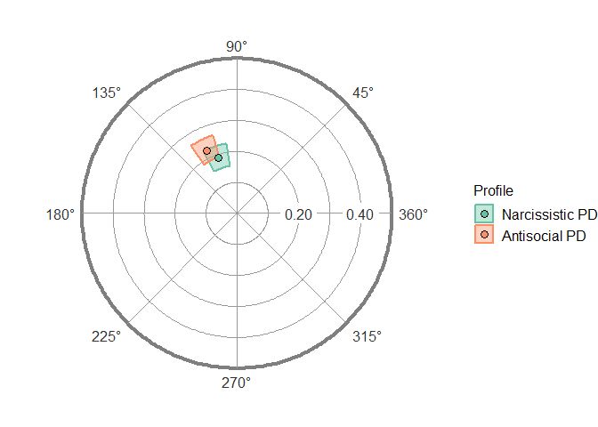

The goal of circumplex is to provide a powerful, flexible, and user-friendly way to analyze and visualize circumplex data. It was created and is maintained by Jeffrey Girard; it was inspired by work from and was developed under advisement from Johannes Zimmermann and Aidan Wright. You can learn more about using this package through the vignette articles available on the package website or through ?circumplex.
Installation
# Install release version from CRAN
install.packages("circumplex")
# Install development version from GitHub
devtools::install_github("jmgirard/circumplex")Usage
data("jz2017")
results <- ssm_analyze(
.data = jz2017,
scales = c(PA, BC, DE, FG, HI, JK, LM, NO),
angles = c(90, 135, 180, 225, 270, 315, 360, 45),
measures = c(NARPD, ASPD)
)ssm_table(results)| Profile | Elevation | X-Value | Y-Value | Amplitude | Displacement | Fit |
|---|---|---|---|---|---|---|
| NARPD | 0.20 [0.17, 0.24] | -0.06 [-0.09, -0.03] | 0.18 [0.15, 0.21] | 0.19 [0.16, 0.22] | 109.0 [99.2, 118.9] | 0.957 |
| ASPD | 0.12 [0.09, 0.16] | -0.10 [-0.13, -0.06] | 0.20 [0.17, 0.24] | 0.23 [0.19, 0.26] | 115.9 [107.4, 124.4] | 0.964 |
ssm_plot(results)
Code of Conduct
Please note that the ‘circumplex’ project is released with a Contributor Code of Conduct. By contributing to this project, you agree to abide by its terms.
References
Girard, J. M., Zimmermann, J., & Wright, A. G. C. (2018). New tools for circumplex data analysis and visualization in R. Meeting of the Society for Interpersonal Theory and Research. Montreal, Canada.
Zimmermann, J., & Wright, A. G. C. (2017). Beyond description in interpersonal construct validation: Methodological advances in the circumplex Structural Summary Approach. Assessment, 24(1), 3–23.
Wright, A. G. C., Pincus, A. L., Conroy, D. E., & Hilsenroth, M. J. (2009). Integrating methods to optimize circumplex description and comparison of groups. Journal of Personality Assessment, 91(4), 311–322.